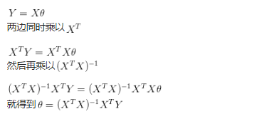

<!doctype html>


  


<html class="theme-next pisces use-motion">
<head>
  <meta charset="UTF-8"/>
<meta http-equiv="X-UA-Compatible" content="IE=edge,chrome=1" />
<meta name="viewport" content="width=device-width, initial-scale=1, maximum-scale=1"/>


<meta http-equiv="Cache-Control" content="no-transform" />
<meta http-equiv="Cache-Control" content="no-siteapp" />


  
  
  <link href="/vendors/fancybox/source/jquery.fancybox.css?v=2.1.5" rel="stylesheet" type="text/css" />


  
  
  
  

  
    
    
  

  

  

  

  

  
    
    
    <link href="//fonts.googleapis.com/css?family=Lato:300,300italic,400,400italic,700,700italic&subset=latin,latin-ext" rel="stylesheet" type="text/css">
  


<link href="/vendors/font-awesome/css/font-awesome.min.css?v=4.4.0" rel="stylesheet" type="text/css" />

<link href="/css/main.css?v=5.0.1" rel="stylesheet" type="text/css" />


  <meta name="keywords" content="技术,机器学习," />


  <link rel="shortcut icon" type="image/x-icon" href="/favicon.ico?v=5.0.1" />


<meta name="description" content="Multivariate Linear RegressionGradient Descent in Practice I - Feature Scaling 特征缩放The objective of linear regression is to minimize the cost functionJ(θ) = 12mXmi=1 hθ(x(i)) − y(i)2where the hypothe">
<meta name="keywords" content="技术,机器学习">
<meta property="og:type" content="article">
<meta property="og:title" content="Coursera机器学习2">
<meta property="og:url" content="http://yoursite.com/2017/05/18/Coursera机器学习2/index.html">
<meta property="og:site_name" content="Yaoleo">
<meta property="og:description" content="Multivariate Linear RegressionGradient Descent in Practice I - Feature Scaling 特征缩放The objective of linear regression is to minimize the cost functionJ(θ) = 12mXmi=1 hθ(x(i)) − y(i)2where the hypothe">
<meta property="og:image" content="http://yoursite.com/2017/05/18/Coursera机器学习2/ML2.1FeatureScaling.png">
<meta property="og:image" content="http://yoursite.com/2017/05/18/Coursera机器学习2/ML2.1LearningRate.png">
<meta property="og:image" content="http://yoursite.com/2017/05/18/Coursera机器学习2/ML2.1PolynomialRegression.png">
<meta property="og:image" content="http://yoursite.com/2017/05/18/Coursera机器学习2/ML2.2NormalEquation1.png">
<meta property="og:image" content="http://yoursite.com/2017/05/18/Coursera机器学习2/ML2.2NormalEquation2.1.png">
<meta property="og:image" content="http://yoursite.com/2017/05/18/Coursera机器学习2/ML2.2NormalEquation2.2.png">
<meta property="og:image" content="http://yoursite.com/2017/05/18/Coursera机器学习2/ML2.2NormalEquation3.png">
<meta property="og:updated_time" content="2017-07-14T16:23:05.204Z">
<meta name="twitter:card" content="summary">
<meta name="twitter:title" content="Coursera机器学习2">
<meta name="twitter:description" content="Multivariate Linear RegressionGradient Descent in Practice I - Feature Scaling 特征缩放The objective of linear regression is to minimize the cost functionJ(θ) = 12mXmi=1 hθ(x(i)) − y(i)2where the hypothe">
<meta name="twitter:image" content="http://yoursite.com/2017/05/18/Coursera机器学习2/ML2.1FeatureScaling.png">


<script type="text/javascript" id="hexo.configuration">
  var NexT = window.NexT || {};
  var CONFIG = {
    scheme: 'Pisces',
    sidebar: {"position":"left","display":"post"},
    fancybox: true,
    motion: true,
    duoshuo: {
      userId: 0,
      author: '博主'
    }
  };
</script>

  <title> Coursera机器学习2 | Yaoleo </title>
</head>

<body itemscope itemtype="http://schema.org/WebPage" lang="zh-Hans">

  


  
  
    
  

  <div class="container one-collumn sidebar-position-left page-post-detail ">
    <div class="headband"></div>

    <header id="header" class="header" itemscope itemtype="http://schema.org/WPHeader">
      <div class="header-inner"><div class="site-meta ">
  

  <div class="custom-logo-site-title">
    <a href="/"  class="brand" rel="start">
      <span class="logo-line-before"><i></i></span>
      <span class="site-title">Yaoleo</span>
      <span class="logo-line-after"><i></i></span>
    </a>
  </div>
  <p class="site-subtitle">I pray to myself, for myself.</p>
</div>

<div class="site-nav-toggle">
  <button>
    <span class="btn-bar"></span>
    <span class="btn-bar"></span>
    <span class="btn-bar"></span>
  </button>
</div>

<nav class="site-nav">
  

  
    <ul id="menu" class="menu">
      
        
        <li class="menu-item menu-item-home">
          <a href="/" rel="section">
            
              <i class="menu-item-icon fa fa-fw fa-home"></i> <br />
            
            首页
          </a>
        </li>
      
        
        <li class="menu-item menu-item-categories">
          <a href="/categories" rel="section">
            
              <i class="menu-item-icon fa fa-fw fa-th"></i> <br />
            
            分类
          </a>
        </li>
      
        
        <li class="menu-item menu-item-archives">
          <a href="/archives" rel="section">
            
              <i class="menu-item-icon fa fa-fw fa-archive"></i> <br />
            
            归档
          </a>
        </li>
      
        
        <li class="menu-item menu-item-tags">
          <a href="/tags" rel="section">
            
              <i class="menu-item-icon fa fa-fw fa-tags"></i> <br />
            
            标签
          </a>
        </li>
      

      
    </ul>
  

  
</nav>

 </div>
    </header>

    <main id="main" class="main">
      <div class="main-inner">
        <div class="content-wrap">
          <div id="content" class="content">
            

  <div id="posts" class="posts-expand">
    

  
  

  
  
  

  <article class="post post-type-normal " itemscope itemtype="http://schema.org/Article">

    
      <header class="post-header">

        
        
          <h1 class="post-title" itemprop="name headline">
            
            
              
                Coursera机器学习2
              
            
          </h1>
        

        <div class="post-meta">
          <span class="post-time">
            <span class="post-meta-item-icon">
              <i class="fa fa-calendar-o"></i>
            </span>
            <span class="post-meta-item-text">发表于</span>
            <time itemprop="dateCreated" datetime="2017-05-18T00:00:11+08:00" content="2017-05-17">
              2017-05-17
            </time>
          </span>

          
            <span class="post-category" >
              &nbsp; | &nbsp;
              <span class="post-meta-item-icon">
                <i class="fa fa-folder-o"></i>
              </span>
              <span class="post-meta-item-text">分类于</span>
              
                <span itemprop="about" itemscope itemtype="https://schema.org/Thing">
                  <a href="/categories/黑客/" itemprop="url" rel="index">
                    <span itemprop="name">黑客</span>
                  </a>
                </span>

                
                

              
            </span>
          

          
            
          

          

          
          

          
        </div>
      </header>
    


    <div class="post-body" itemprop="articleBody">

      
      

      
        <h1 id="Multivariate-Linear-Regression"><a href="#Multivariate-Linear-Regression" class="headerlink" title="Multivariate Linear Regression"></a>Multivariate Linear Regression</h1><h2 id="Gradient-Descent-in-Practice-I-Feature-Scaling-特征缩放"><a href="#Gradient-Descent-in-Practice-I-Feature-Scaling-特征缩放" class="headerlink" title="Gradient Descent in Practice I - Feature Scaling 特征缩放"></a>Gradient Descent in Practice I - Feature Scaling 特征缩放</h2><p>The objective of linear regression is to minimize the cost function<br>J(θ) = 1<br>2m<br>Xm<br>i=1</p>
<p>hθ(x<br>(i)<br>) − y<br>(i)<br>2<br>where the hypothesis hθ(x) is given by the linear model<br>hθ(x) = θ<br>T x = θ0 + θ1x1</p>
<h3 id="why？"><a href="#why？" class="headerlink" title="why？"></a>why？</h3><p>因为多个特征的时候，代价函数图形可能非常的”偏斜”<br><br>梯度下降在一个漫长的斜坡上来回波动 下降很慢<br>所以要划分到一个相近的范围里来做， 下降就会很快。</p>
<h3 id="how？"><a href="#how？" class="headerlink" title="how？"></a>how？</h3><ul>
<li><p>Feature Scaling特征缩放：<br>  每个值除以范围 得到-1 - +1 以内数字 最好<br>  -3 +3 以内可以接受 -1/3 +1/3 也可 太小 或太大就不行 要靠经验 看实验结果</p>
</li>
<li><p>Mean normalization均值归一化<br>  每个值减去平均值再除以（最大值减去最小值）</p>
</li>
</ul>
<a id="more"></a>
<h2 id="Gradient-Descent-in-Practice-II-Learning-Rate-学习率-（步长）"><a href="#Gradient-Descent-in-Practice-II-Learning-Rate-学习率-（步长）" class="headerlink" title="Gradient Descent in Practice II - Learning Rate 学习率 （步长）"></a>Gradient Descent in Practice II - Learning Rate 学习率 （步长）</h2><p>try 0.001 0.003 0.01 0.03 0.1 1 …<br>画出横坐标迭代次数 纵坐标代价函数值的图形 观察<br></p>
<p>这还真是显而易见的方法啊。。。</p>
<h2 id="Features-and-Polynomial-Regression"><a href="#Features-and-Polynomial-Regression" class="headerlink" title="Features and Polynomial Regression"></a>Features and Polynomial Regression</h2><ul>
<li><p>特征选择：<br>具体问题具体分析 房价 房子的长宽就可以合成面积特征</p>
</li>
<li><p>多项式回归：<br></p>
</li>
</ul>
<h1 id="Computing-Parameters-Analytically"><a href="#Computing-Parameters-Analytically" class="headerlink" title="Computing Parameters Analytically"></a>Computing Parameters Analytically</h1><h2 id="Normal-Equation-正规方程"><a href="#Normal-Equation-正规方程" class="headerlink" title="Normal Equation 正规方程"></a>Normal Equation 正规方程</h2><p>why?</p>
<ul>
<li>一次性求解Θ的最优值</li>
<li>不需特征缩放-&gt;不要忘记特征缩放需要做是因为梯度下降那个坡太漫长，会坡上来回波动 下降很慢<br>what？<br>理解：<br>Θ是个实数 即可以简化代价函数J(Θ)是个二次函数(开口显然向上啊) 那么求什么时候二次函数有最小值呢 Θ = A/2B<br>或者三次 四次函数 那么求导 导数为零的点就是Θ值</li>
</ul>
<p>Θ是个N+1维的向量怎么办？<br><br>理论上 微积分 从Θ0 到 Θn 一直求偏导 都让偏导数得零 那么就能求出多维向量Θ<br>但是这样太复杂了</p>
<p>所以有一个公式：<br><br><br>    公式推导<br></p>
<p>怎样选择梯度下降还是正规方程？</p>
<p>梯度下降需要选择步长 这需要多次尝试 还需要多次迭代 这需要时间<br>但是特征种类数目很多的时候也能正常运行</p>
<p>而正规方程需要计算矩阵转置乘以矩阵再求逆， n*n矩阵运算 O(N^3) n很大的时候就会很慢</p>
<h2 id="Normal-Equation-Noninvertibility-不可逆性"><a href="#Normal-Equation-Noninvertibility-不可逆性" class="headerlink" title="Normal Equation Noninvertibility 不可逆性"></a>Normal Equation Noninvertibility 不可逆性</h2><p>即讲什么呢？ 就是说有的矩阵可以求逆运算有的不行<br>Octave里面有两个求逆运算的函数 pinv 和inv<br>pinv可以求出伪值 即不可逆矩阵也能算 </p>

      
    </div>

    <div>
      
        
      
    </div>

    <div>
      
        

      
    </div>

    <footer class="post-footer">
      
        <div class="post-tags">
          
            <a href="/tags/技术/" rel="tag">#技术</a>
          
            <a href="/tags/机器学习/" rel="tag">#机器学习</a>
          
        </div>
      

      
        <div class="post-nav">
          <div class="post-nav-next post-nav-item">
            
              <a href="/2017/05/11/2017阅读-片报告/" rel="next" title="2017阅读/片报告">
                <i class="fa fa-chevron-left"></i> 2017阅读/片报告
              </a>
            
          </div>

          <div class="post-nav-prev post-nav-item">
            
              <a href="/2017/05/22/Python-Django-MySql-中文问题/" rel="prev" title="Python Django MySql 中文问题">
                Python Django MySql 中文问题 <i class="fa fa-chevron-right"></i>
              </a>
            
          </div>
        </div>
      

      
      
    </footer>
  </article>


    <div class="post-spread">
      
    </div>
  </div>


          </div>
          


          
  <div class="comments" id="comments">
    
  </div>


        </div>
        
          
  
  <div class="sidebar-toggle">
    <div class="sidebar-toggle-line-wrap">
      <span class="sidebar-toggle-line sidebar-toggle-line-first"></span>
      <span class="sidebar-toggle-line sidebar-toggle-line-middle"></span>
      <span class="sidebar-toggle-line sidebar-toggle-line-last"></span>
    </div>
  </div>

  <aside id="sidebar" class="sidebar">
    <div class="sidebar-inner">

      

      
        <ul class="sidebar-nav motion-element">
          <li class="sidebar-nav-toc sidebar-nav-active" data-target="post-toc-wrap" >
            文章目录
          </li>
          <li class="sidebar-nav-overview" data-target="site-overview">
            站点概览
          </li>
        </ul>
      

      <section class="site-overview sidebar-panel ">
        <div class="site-author motion-element" itemprop="author" itemscope itemtype="http://schema.org/Person">
          
          <p class="site-author-name" itemprop="name">yaoleo</p>
          <p class="site-description motion-element" itemprop="description">极简不矫情&无知不作恶</p>
        </div>
        <nav class="site-state motion-element">
          <div class="site-state-item site-state-posts">
            <a href="/archives">
              <span class="site-state-item-count">24</span>
              <span class="site-state-item-name">日志</span>
            </a>
          </div>

          
            <div class="site-state-item site-state-categories">
              <a href="/categories">
                <span class="site-state-item-count">3</span>
                <span class="site-state-item-name">分类</span>
              </a>
            </div>
          

          
            <div class="site-state-item site-state-tags">
              <a href="/tags">
                <span class="site-state-item-count">15</span>
                <span class="site-state-item-name">标签</span>
              </a>
            </div>
          

        </nav>

        

        <div class="links-of-author motion-element">
          
            
              <span class="links-of-author-item">
                <a href="https://github.com/yaoleo" target="_blank" title="GitHub">
                  
                    <i class="fa fa-fw fa-github"></i>
                  
                  GitHub
                </a>
              </span>
            
              <span class="links-of-author-item">
                <a href="http://www.zhihu.com/people/yaoleo" target="_blank" title="知乎">
                  
                    <i class="fa fa-fw fa-globe"></i>
                  
                  知乎
                </a>
              </span>
            
          
        </div>

        
        

        
        

      </section>

      
        <section class="post-toc-wrap motion-element sidebar-panel sidebar-panel-active">
          <div class="post-toc">
            
              
            
            
              <div class="post-toc-content"><ol class="nav"><li class="nav-item nav-level-1"><a class="nav-link" href="#Multivariate-Linear-Regression"><span class="nav-number">1.</span> <span class="nav-text">Multivariate Linear Regression</span></a><ol class="nav-child"><li class="nav-item nav-level-2"><a class="nav-link" href="#Gradient-Descent-in-Practice-I-Feature-Scaling-特征缩放"><span class="nav-number">1.1.</span> <span class="nav-text">Gradient Descent in Practice I - Feature Scaling 特征缩放</span></a><ol class="nav-child"><li class="nav-item nav-level-3"><a class="nav-link" href="#why？"><span class="nav-number">1.1.1.</span> <span class="nav-text">why？</span></a></li><li class="nav-item nav-level-3"><a class="nav-link" href="#how？"><span class="nav-number">1.1.2.</span> <span class="nav-text">how？</span></a></li></ol></li><li class="nav-item nav-level-2"><a class="nav-link" href="#Gradient-Descent-in-Practice-II-Learning-Rate-学习率-（步长）"><span class="nav-number">1.2.</span> <span class="nav-text">Gradient Descent in Practice II - Learning Rate 学习率 （步长）</span></a></li><li class="nav-item nav-level-2"><a class="nav-link" href="#Features-and-Polynomial-Regression"><span class="nav-number">1.3.</span> <span class="nav-text">Features and Polynomial Regression</span></a></li></ol></li><li class="nav-item nav-level-1"><a class="nav-link" href="#Computing-Parameters-Analytically"><span class="nav-number">2.</span> <span class="nav-text">Computing Parameters Analytically</span></a><ol class="nav-child"><li class="nav-item nav-level-2"><a class="nav-link" href="#Normal-Equation-正规方程"><span class="nav-number">2.1.</span> <span class="nav-text">Normal Equation 正规方程</span></a></li><li class="nav-item nav-level-2"><a class="nav-link" href="#Normal-Equation-Noninvertibility-不可逆性"><span class="nav-number">2.2.</span> <span class="nav-text">Normal Equation Noninvertibility 不可逆性</span></a></li></ol></li></ol></div>
            
          </div>
        </section>
      

    </div>
  </aside>


        
      </div>
    </main>

    <footer id="footer" class="footer">
      <div class="footer-inner">
        <div class="copyright" >
  
  &copy; 
  <span itemprop="copyrightYear">2017</span>
  <span class="with-love">
    <i class="fa fa-heart"></i>
  </span>
  <span class="author" itemprop="copyrightHolder">yaoleo</span>
</div>

<div class="powered-by">
  由 <a class="theme-link" href="http://hexo.io">Hexo</a> 强力驱动
</div>

<div class="theme-info">
  主题 -
  <a class="theme-link" href="https://github.com/iissnan/hexo-theme-next">
    NexT.Pisces
  </a>
</div>

        

        
      </div>
    </footer>

    <div class="back-to-top">
      <i class="fa fa-arrow-up"></i>
    </div>
  </div>

  

<script type="text/javascript">
  if (Object.prototype.toString.call(window.Promise) !== '[object Function]') {
    window.Promise = null;
  }
</script>


  


  
  <script type="text/javascript" src="/vendors/jquery/index.js?v=2.1.3"></script>

  
  <script type="text/javascript" src="/vendors/fastclick/lib/fastclick.min.js?v=1.0.6"></script>

  
  <script type="text/javascript" src="/vendors/jquery_lazyload/jquery.lazyload.js?v=1.9.7"></script>

  
  <script type="text/javascript" src="/vendors/velocity/velocity.min.js?v=1.2.1"></script>

  
  <script type="text/javascript" src="/vendors/velocity/velocity.ui.min.js?v=1.2.1"></script>

  
  <script type="text/javascript" src="/vendors/fancybox/source/jquery.fancybox.pack.js?v=2.1.5"></script>


  


  <script type="text/javascript" src="/js/src/utils.js?v=5.0.1"></script>

  <script type="text/javascript" src="/js/src/motion.js?v=5.0.1"></script>


  
  


  <script type="text/javascript" src="/js/src/affix.js?v=5.0.1"></script>

  <script type="text/javascript" src="/js/src/schemes/pisces.js?v=5.0.1"></script>


  
  <script type="text/javascript" src="/js/src/scrollspy.js?v=5.0.1"></script>
<script type="text/javascript" src="/js/src/post-details.js?v=5.0.1"></script>


  


  <script type="text/javascript" src="/js/src/bootstrap.js?v=5.0.1"></script>


  


  


  
  
  

  

  

</body>
</html>
